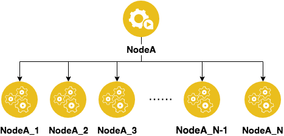
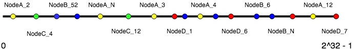
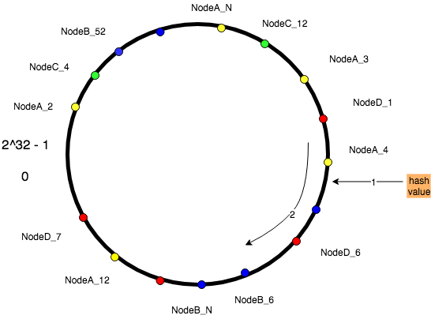

文章来源：宜信技术学院 & 宜信支付结算团队技术分享第一期-宜信支付结算八方数据团队高级技术经理 周恒《Nginx的细枝末节》
分享者：宜信支付结算八方数据团队高级技术经理 周恒
原文首发于支付结算技术团队公号：野指针
前篇Nginx专题（1）：Nginx之反向代理及配置详细介绍了Nginx功能之一——反向代理。本篇文章将重点介绍Nginx功能之二——负载均衡。
为了增加对负载均衡的好感，我们先了解负载均衡能实现什么。
下面正式进入主题。
负载均衡就是将请求“均衡”地分配到多台业务节点服务器上。这里的“均衡”是依据实际场景和业务需要而定的。
对于Nginx来说，请求到达Nginx，Nginx作为反向代理服务器，有绝对的决策权，可以按照规则将请求分配给它知道的节点中的一个，通过这种分配，使得所有节点需要处理的请求量处于相对平均的状态，从而实现负载均衡。
Nginx支持的负载均衡策略很多，比较重点的如下：
这么多的策略，非常不利于记忆和选择，我们不妨将这些常见的策略归类，分而化之，方便挑选。
最佳实践，其实就是最常见、最普通的默认配置，当然也是在一定程度上最好用的配置。不知道用什么方式的时候，就可以选择用这一类型。
轮询不用多说。这里的随机，其实在大量请求的情况下，按照概率的理论等同于轮询的方式。
轮询配置参考：
#默认配置就是轮询策略
upstream server_group {
server backend1.example.com;
server backend2.example.com;
}
随机配置参考：
upstream server_group {
random;
server backend1.example.com;
server backend2.example.com;
server backend3.example.com;
server backend4.example.com;
}
让业务节点中性能更强的机器得到更多请求，这也是一个比较好的分配策略。
什么是性能更好的机器？这个问题也有很多的维度去考量。
权重的配置参考：
upstream server_group {
server backend1.example.com weight=5;
#默认为不配置权重为1
server backend2.example.com;
}
响应的时长(fair)配置参考：需要在Nginx编译时加入nginx-upstream-fair模块。
upstream server_group{
fair;
server backend1.example.com;
server backend2.example.com;
server backend3.example.com;
server backend4.example.com;
}
最少连接数(least_conn)配置参考：
upstream server_group {
least_conn;
server backend1.example.com;
server backend2.example.com;
}
很多请求都是有状态的，上一次请求到哪个业务节点，这次还要请求到哪台机器。比如常见的session就是这样一种有状态的业务。
这里Nginx提供了按照客户端ip的hash来作为用户的标示分配、url的hash作为分配标示的规则。本质上还是要找到用户的请求中不变的要素，抽离出来，这样就可以进行分配了。
ip_hash配置参考：
upstream server_group {
ip_hash;
server backend1.example.com;
server backend2.example.com;
}
url_hash配置参考：
upstream server_group{
hash $request_uri consistent;
server backend1.example.com;
server backend2.example.com;
server backend3.example.com;
server backend4.example.com;
}
Nginx支持一致性hash进行分配，也就是配置中consistent。
什么是一致性hash？为什么要引入这个机制？在生产环境下，业务节点经常会出现增加或减少的情况，就算这种增加或减少都是被动的，也可能会对hash分配产生影响。如何能够做到尽量减少影响呢？这时一致性hash被发明出来。
一致性hash解决两个问题：
1）如何解决分配不均的问题
将原来的每一个节点复制出N个虚拟节点，并且给这些虚拟节点都起个名字。

比如原来有5个节点，分配的时候经常会不均匀，现在每个节点都虚拟出N个节点，就是5*N个节点，会极大降低分配不均匀的情况。下面就要说说如何分配的问题了。
2）如何解决节点变动的问题
一致性哈希的基本思想：
如下图。


下面再来看节点的变化对一致性Hash的影响。
先看看经典配置，再详细解释。
upstream server_group {
server backend1.example.com ;
server backend2.example.com max_fails=3 fail_timeout=30s;
server backup1.example.com backup;
}
这个参数决定了多少次请求后端失败后会暂停这个业务节点，不再给它发新的请求，默认值是1。此参数需要配合fail_timeout一起用。
题外话：如何定义失败，有很多种类型，这里因为主要处理HTTP代理，所以更关注proxy_next_upstream。
proxy_next_upstream：主要定义了当服务节点出现状况时，会将请求发给其他节点，也就是定义了怎么算作业务节点失败。
决定了当Nginx认定这个节点不可用时，暂停多久。不配置默认就是10s。
把上面两个参数联合起来考虑就是：当Nginx发现发送到这个节点上的请求失败了3次的时候，就会把这个节点摘除，摘除时间是30s，30s后才会再次发送请求到这个节点上。
类似于switch语句中的default，当主要节点都挂了的时候，会把请求打到这个backup节点。这是最后一个救兵了。
由于Nginx采用了反向代理技术，对于请求的转发有绝对的控制权，使得负载均衡变成了可能。
本文介绍了负载均衡的概念，详细分类了Nginx的负载均衡策略，并提供了简单配置参考。同时介绍了一致性hash的原理，及常用的故障节点的摘除与恢复。下一篇将会介绍Nginx功能之三——HTTP缓存，敬请期待。